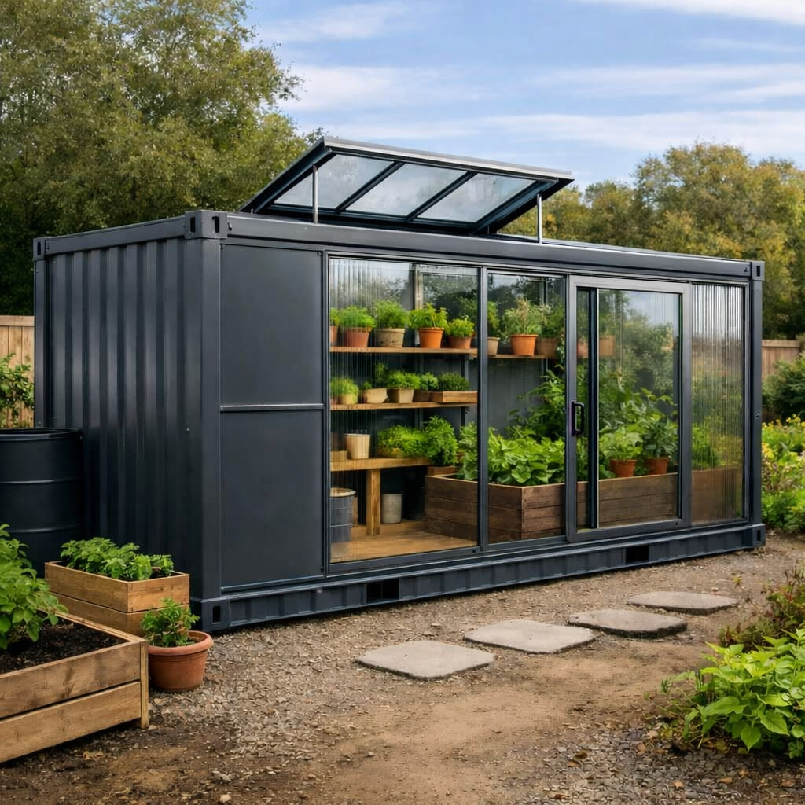

≈ 13,8 m²
Serre de jardin
Serre fonctionnelle, idéale pour la culture potagère naturelle.
Dimensions, options & détails
Dimensions
5,90 m × 2,35 m — surface intérieure utile ≈ 13,8 m²
Description
Structure acier, panneau latéral droit conservé, toiture vitrée (verre ou polycarbonate selon configuration). Solution robuste et durable, parfaitement adaptée aux jardins privés, micro-fermes, espaces pédagogiques ou projets de production locale.
Options
- Vitrage verre trempé ou polycarbonate
- Couleur extérieure au choix
- Aération naturelle ou assistée
- Étagères, rangements, table de rempotage
- Récupération d'eau + gouttières
- Électricité / éclairage horticole
Personnalisation
Chaque module est entièrement personnalisable (couleur, aménagements, équipements, finitions) afin de répondre précisément à vos besoins et à votre environnement.
Photos non contractuelles : visuels présentés à titre illustratif. Les réalisations finales peuvent varier selon les matériaux, options, dimensions et conditions de mise en œuvre.